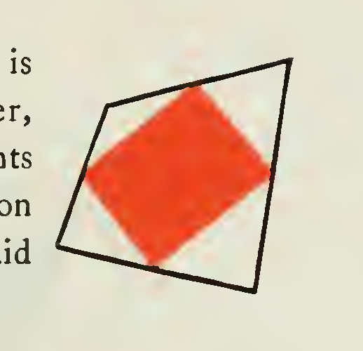

Book IV Definitions (I–VII)¶
Inscribed & Circumscribed Rectilineal Figures and Circles (Pickering pp. 123–124, Leaves 157–158)


Definitions I–II (p. 123): A rectilineal figure is inscribed in another when each angular point of the inscribed figure lies on a side of the other; and conversely circumscribed about it.
Definitions III–VII (p. 124): A rectilineal figure is inscribed in a circle when each angular point is on the circumference; a circle is inscribed in or circumscribed about a rectilineal figure; and a straight line is fitted into (applied in) a circle when its extremities lie on the circumference.
See Commentary.